Artistas del Festival
Explora el line-up completo del AltSonik Fest 2025. Tres días de energía, música alternativa y sonidos únicos.

Explora el line-up completo del AltSonik Fest 2025. Tres días de energía, música alternativa y sonidos únicos.
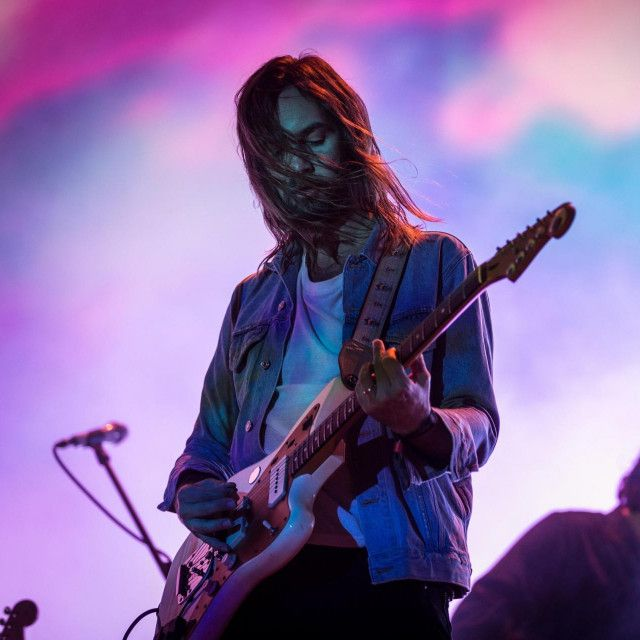
Tame Impala – Psicodelia moderna desde Australia.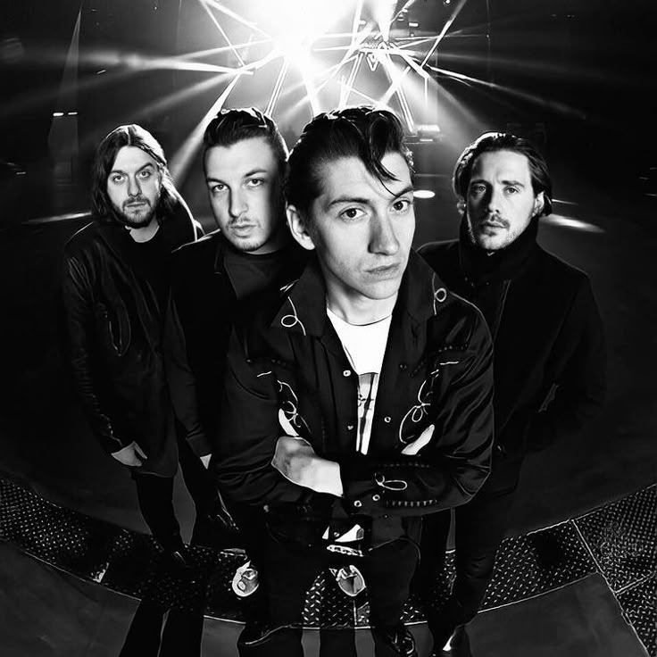
Arctic Monkeys – Rock alternativo británico de alto voltaje.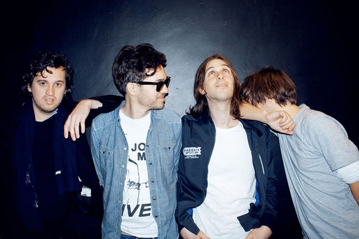
Phoenix – Indie pop francés con energía elegante.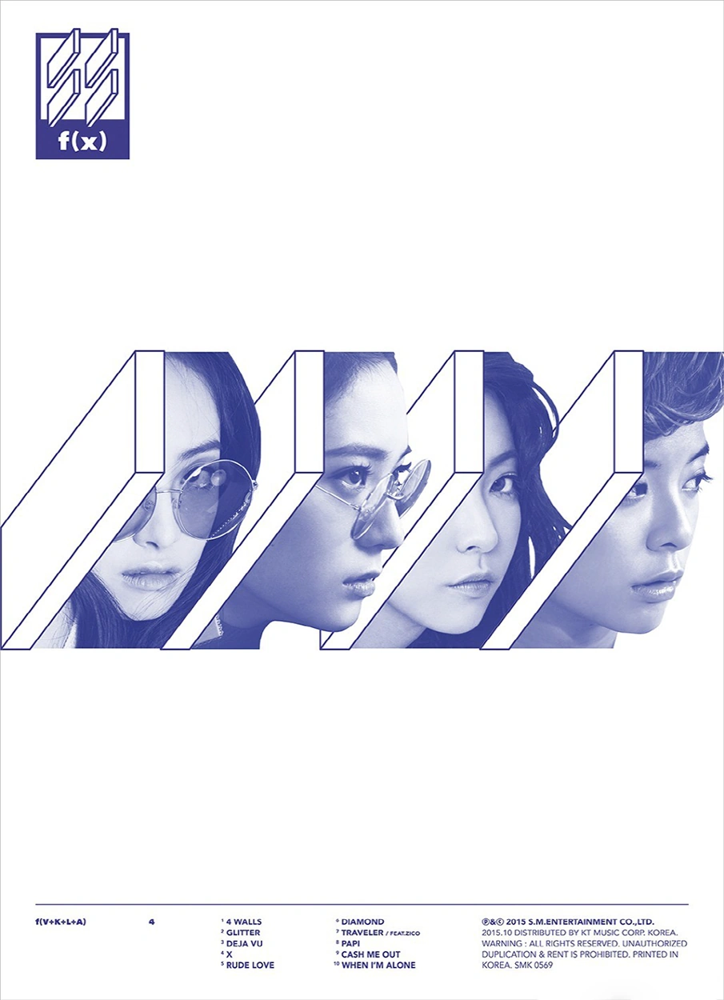
f(x) – Pioneras del K-pop alternativo, mezcla de synthpop y experimentación visual.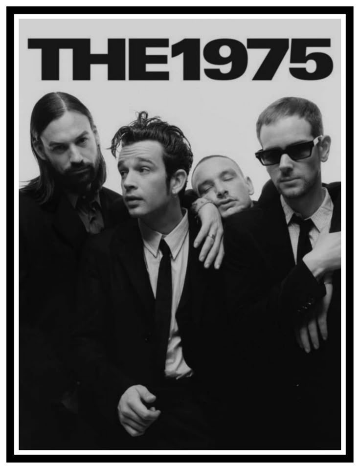
The 1975 – Pop alternativo con estilo synth-rock.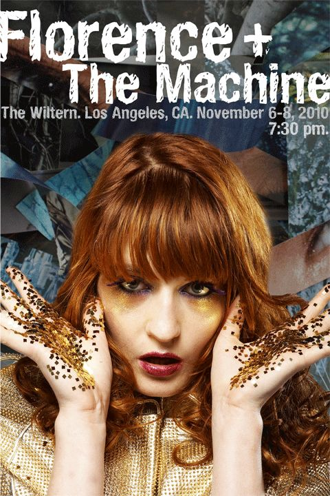
Florence + The Machine – Potencia vocal y arte místico.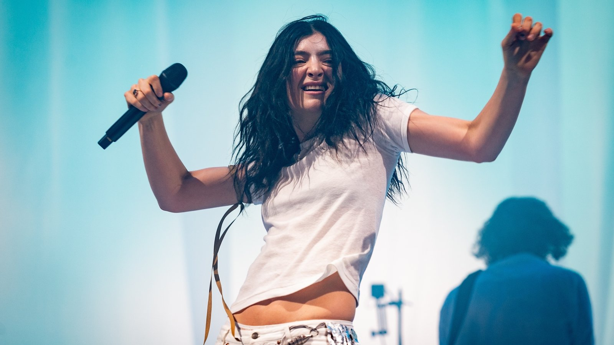
Lorde – Pop alternativo y letras introspectivas desde Nueva Zelanda.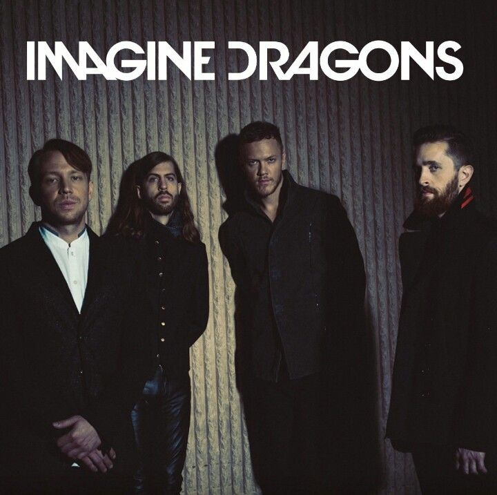
Imagine Dragons – Pop-rock alternativo con energía global.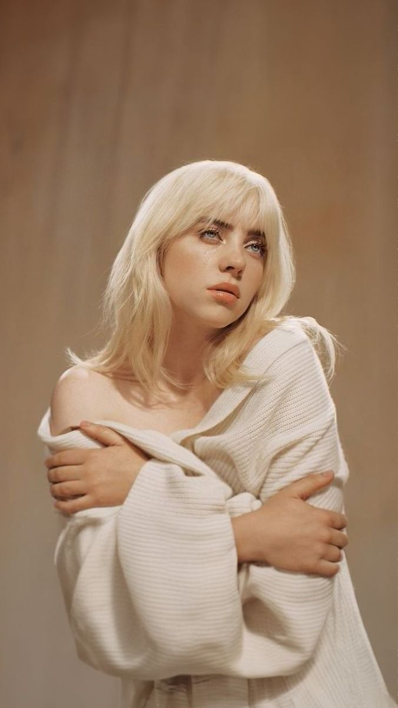
Billie Eilish – Pop alternativo con estética oscura y vanguardista.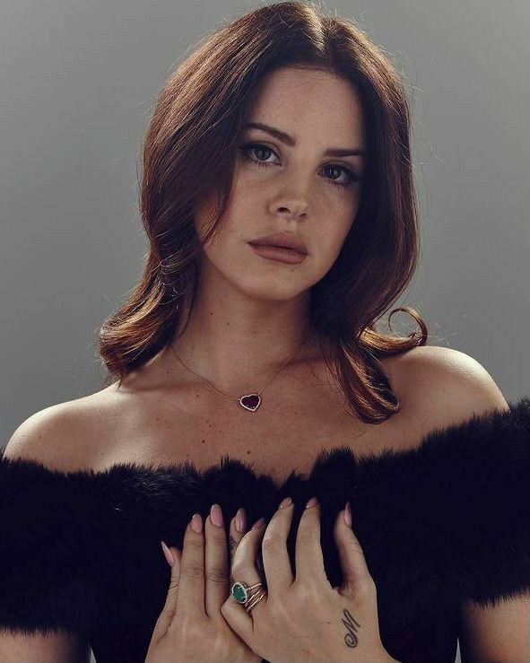
Lana Del Rey – Sonidos cinematográficos y melancólicos.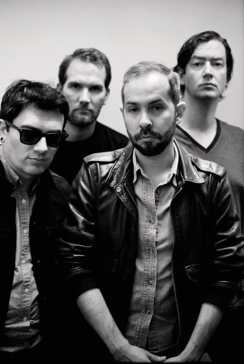
Cigarettes After Sex – Dream pop suave y envolvente.